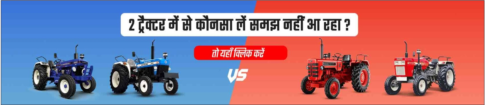

Popular Tractor
 Sonalika Di60
Sonalika Di60 Popular Tractor
 Massey 245Di
Massey 245Di  Mahindra 585di Mat
Mahindra 585di Mat Tractors by Brand
 Massey Fergusion
Massey Fergusion
 Mahindra
Mahindra  Eicher
EicherTractors By Hp
Tractor Comparison

About:- Hello This is an Official Website of Tractor K Videos Youtube channel Where we provide useful information about tractor so that farmers can informed about all the changes in the tech field about farming and its implements. On this platform, you will find all prominent manufacturers such as Mahindra, Swaraj, Eicher, Sonalika, New Holland, Massey Ferguson, John Deere, Powertrac, Farmtrac, Kubota, and many others. As the Tractor k Videos information provided on the Tractor k videos portal is completely correct and precise. Tractor k vidoes also avail real-world concept of offering every detail about tractors, including new models, all tractor brands, micro tractors, tractor models, tractors for sale, compare tractors, tractors with pricing and precise values, and so on. The tractor's on-road price and other specification details are, without a doubt, difficult to find. Hours and hours are spent seeking tractor information; hence, this snarl is resolved by compiling all of the tractor information and facts on a single platform. Tractor k Videos makes efforts to provide genuine and up-to-date information on tractors, tyres, and other farm implements. The farmers' workload is reduced and things are made easier and simpler for them by having all of the information on one plate. Furthermore, TractorGyan's major goal is to make farming more appealing and to show off its actual potential to those involved in it, as well as to the general public who are interested in learning everything there is to know about farming and agriculture. Tractor k Videos priority is to provide proper and precise knowledge to farmers with complete information. As the name suggests TractorGyan (Knowledge) have all the broad knowledge about the tractor, tractor implements and tractor related equipment. To know more details about this platform let us discuss some key factors below.